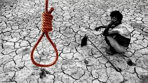

Indian farmers are the backbone of the Indian economy but everything is not going right for them.Agriculture contributes to nearly one third of India GDP. It provides livelihood for the major Indian population. Some of the challenges agriculture faces are old, some are new. Government must give agriculture the same importance as industries. If the proper care won't be taken, the words like "small farmer" will become a history.
The problems of Indian farmers are even bigger than what government anticipates. No one thinks agriculture as a respectful profession anymore. Gone are the days when people used to prefer farming over government job. Now even farmers don't want their kids to become a farmer .Young people going away from farming. Many farmers are not in farming by choice but because it's the only way they can earn their bread. Many have no knowledge of recent agriculture developments .They still rely on the knowledge passed over their ancestors. So awareness about new developments is very much necessary. Government has started many programs to spread awareness including time to time "krishi mela" but active participation of farmers are also required for its success .